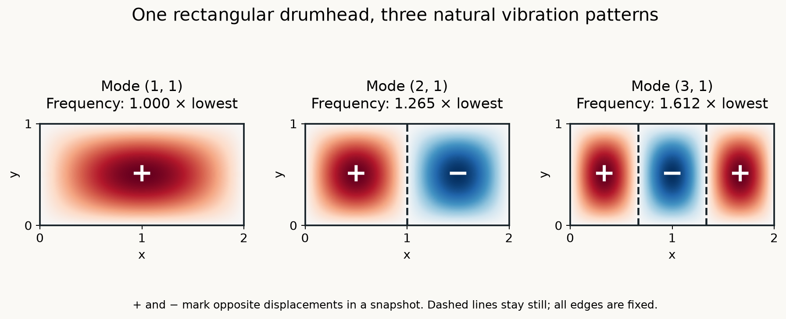
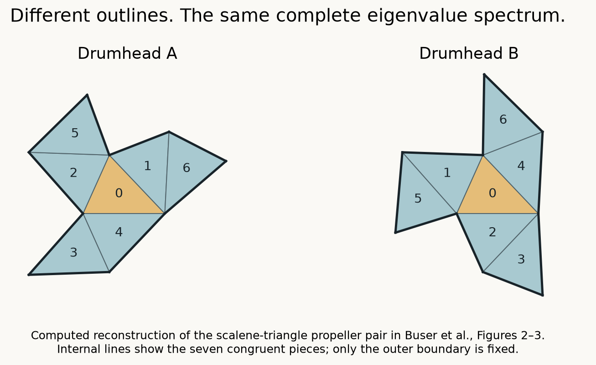
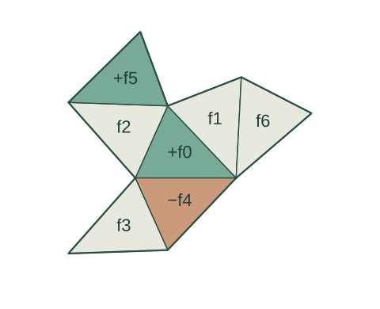
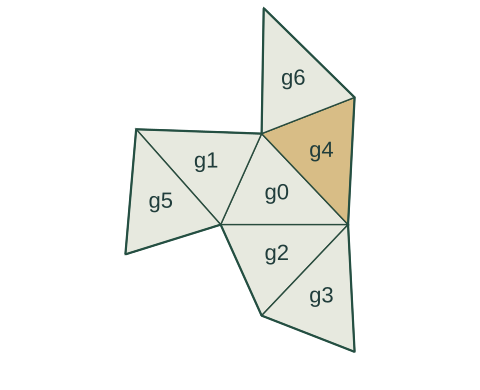

THE STATIC EDITION · NO MOTION REQUIRED
Can You Hear the Shape of a Drum?
A shape has a sound. Does that sound have only one shape?
Imagine a drum behind a curtain. A perfect instrument gives you every natural frequency of its drumhead, including repetitions. Could you draw its outline?
Real recordings depend on the material, the strike and the room. Our question concerns an ideal, uniform, flat membrane with its edge fixed and its physical properties known. “Hearing” means having the complete frequency list. That is much more information than recognizing a note.
One drum, many ways to move
The fixed edge cannot move, and neighboring points pull on one another. Only special patterns can oscillate while keeping their spatial shape. These are natural modes, each with its own frequency.
A vibrating string offers a starting point. Some standing-wave patterns have stationary points between the ends. Across a drumhead, stationary curves are called nodal lines. The regions between them can move in opposite directions.

Figure 1. Signs show opposite displacements in a snapshot; they reverse during motion. The dashed nodal lines and the outer edge stay still. A real strike usually excites several modes together.
Twice the size: what changes?
Double both side lengths, keeping the tension and surface density unchanged. Do the natural frequencies double, halve, or stay the same?
They halve. The same pattern is spread over twice the distance, while the wave speed stays fixed: its oscillation takes twice as long. The formula below makes the scaling precise.
Check the rectangular formula
For side lengths a and b, wave speed c, and positive integers m,n:
fmn = (c/2)√(m²/a² + n²/b²)
Replacing both a and b by twice their values divides the quantity under the square root by four, hence every fmn by two. Scaling only one side would not have this uniform effect.
With the physical conditions fixed, each frequency corresponds to an eigenvalue, proportional to frequency squared. The complete eigenvalue list, including repetitions, is the spectrum.
Geometry affects vibration. Could we follow that relationship backward, from frequencies to shape?
You can hear the area
The frequency list contains geometric clues. At high frequencies, the rate at which modes accumulate reveals the area. For smooth boundaries and ordinary polygons, the complete spectrum also determines the perimeter. [1]
The field studying these relationships between geometry and eigenvalues is spectral geometry. Its inverse question now looks promising: if the list reveals area and perimeter, might it reveal the whole outline?
See how counting modes estimates area
A 4 × 1 rectangle and a 2 × 2 square both have area 4. For the positive Laplacian −Δ, count the eigenvalues up to Λ, including multiplicities. Weyl’s law gives the estimate A ≈ 4πN(Λ)/Λ.
| Cutoff Λ | 4 × 1: modes | Area estimate | 2 × 2: modes | Area estimate |
|---|---|---|---|---|
| 80 | 18 | 2.83 | 20 | 3.14 |
| 800 | 228 | 3.58 | 234 | 3.68 |
| 8,000 | 2,481 | 3.90 | 2,490 | 3.91 |
The estimates approach 4 as Λ grows without bound. Finite estimates fluctuate and include boundary effects; improvement need not be monotonic. Agreement on area does not mean agreement of the spectra. These rectangles are not an isospectral pair.
Different shapes, the same entire spectrum
Mark Kac popularized the drum question in his 1966 essay. In 1992, Carolyn Gordon, David Webb and Scott Wolpert published planar counterexamples: different shapes with identical complete eigenvalue spectra. The answer was “not always.” [2]

Figure 2. A reconstructed pair from Buser and colleagues’ later account. Internal lines mark the construction; only the outer boundary is fixed. [3]
Isospectral means all eigenvalues agree, including their multiplicities. Non-isometric means no translation, rotation or reflection makes the planar domains coincide. Agreement is exact throughout an infinite list; a few similar low frequencies would not establish it.
How can every frequency agree?
The proof relates whole families of modes. Divide any eigenfunction on drum A into seven function pieces. Reflect and align selected pieces on drum B, then add or subtract their values. This construction is called transplantation. [3]


For this target triangle: g₄ = f₀ + f₅ − f₄, after the three pieces have been geometrically aligned. Each symbol represents a whole function, not a number. Colors identify terms, not vibration heights.
Reflection preserves the Laplacian, and its linearity preserves the eigenvalue when such pieces are combined. The specific rules also make the functions match across seams and vanish at the outer edge. An invertible correspondence works for each eigenspace, preserving multiplicity. That establishes the complete spectral match. [3]
Inspect all seven rules
Each source function is first aligned with its target triangle. The signs refer to functions, not physical pieces cut from a drum.
| Target | Aligned source functions |
|---|---|
| g₀ | f₁ + f₂ + f₄ |
| g₁ | f₀ − f₁ + f₃ |
| g₂ | f₀ − f₂ + f₆ |
| g₃ | f₁ − f₅ − f₆ |
| g₄ | f₀ − f₄ + f₅ |
| g₅ | −f₃ + f₄ − f₆ |
| g₆ | f₂ − f₃ − f₅ |
Arbitrary triangle rearrangements do not satisfy these conditions. This diagram guides you through the published construction; it is not itself a proof based on a simulated mode. See Buser et al., §2 and Figure 3.
What survives behind the curtain?
You can recover some geometry while still missing the unique outline. The obstacle is not merely an imperfect ear or a short recording: even the complete spectrum can leave ambiguity.
Extra information can change the answer. Within the class of triangular drumheads, the complete spectrum determines the triangle up to congruence. [4] “Not always” leaves room for powerful positive results.
Equal spectra also do not make arbitrary recordings identical. A recording depends on which modes are excited, their amplitudes and how the vibration is measured. Our conclusion concerns an ideal planar membrane and specified spectral information.
A shape determines a spectrum. A spectrum can reveal area and perimeter. Yet it need not name one shape. Which other geometric features can we recover?
The mathematics behind the motion
A mode shape φ satisfies −Δφ = λφ, with φ = 0 on the boundary. Here Δφ = ∂²φ/∂x² + ∂²φ/∂y² describes local spatial curvature. Substituting u = φ cos(2πft) into the wave equation utt = c²Δu gives f = c√λ/(2π). With fixed wave speed c, the eigenvalues and natural frequencies determine each other. [5]
For a rectangle, φmn = sin(mπx/a)sin(nπy/b) and λmn = π²(m²/a² + n²/b²). Counting multiplicities matters: on a square, (1,2) and (2,1) are independent modes with the same eigenvalue.
In our −Δ convention, Weyl’s law is N(Λ)/Λ → A/(4π). For smooth bounded planar domains, the heat trace begins Σe−tλ = A/(4πt) − L/(8√(πt)) + O(1) as t → 0. Polygons share these first two terms; corners contribute at the constant term. Thus the complete spectrum determines area A and perimeter L. Kac uses a different operator normalization, which changes the constants in his formulas. [1]
Sources & notes
- Mark Kac, Can One Hear the Shape of a Drum? American Mathematical Monthly 73(4), Part 2 (1966), 1–23.
- Gordon, Webb & Wolpert, One cannot hear the shape of a drum (1992).
- Buser, Conway, Doyle & Semmler, Some planar isospectral domains, 1994 version, §2 and Figures 2–3.
- Grieser & Maronna, Hearing the Shape of a Triangle, 2013 version.
- Georgia Tech notes, Separation of Variables for Higher Dimensional Wave Equation.
Explore the interactive edition →
A project by John Huang. Created with Codex assistance. Rectangular modes and counts use explicit formulas. Counterexample and transplantation illustrations reconstruct the cited published construction; the paper provides the exact proof. No visitor responses are collected or stored.